Atlas
A data pipeline that turns OpenStreetMap into 23 printable route guides and an interactive 3D tool that walks visitors from anywhere on campus to the ISTEP office, door to door.

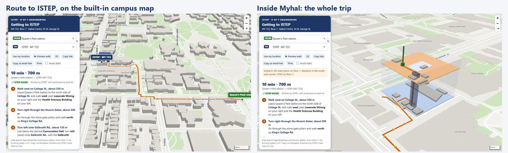
Result
- 23printable route guides
- 11,216nodes in the campus graph
- 18 of 20hand-checked routes step-free
21 of the guides already ship inside Virtual Office, and on-site checks such as door accessibility are still open.
The problem
ISTEP is on floor 7 of the Myhal Centre, and visitors get lost. The main doors aren't on St. George St., two campus roads restrict cars, and events also run at other venues across campus.
What I built
A pipeline that turns OpenStreetMap into 23 printable guides and an interactive 3D tool. The tool routes in the browser, so nobody's start point leaves the device, and it imports the guides' routes and step text, so the two never disagree.

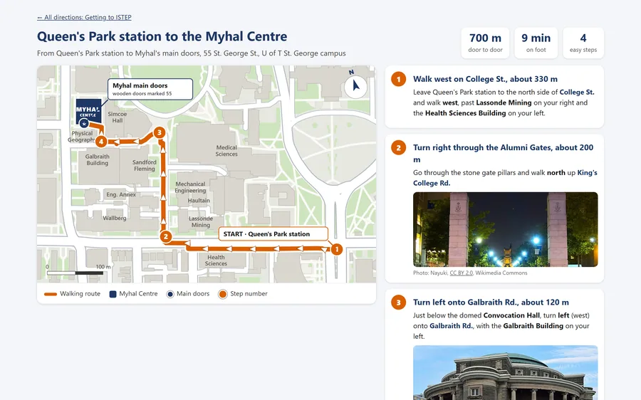
Calls I made
- Route on the device. In-browser routing, no analytics, and a note on what the page sends.
- One source of truth. The 3D tool imports the printed guides' routes and text.
- Hide what isn't confirmed. Unconfirmed accessibility details are hidden, not guessed.
More images


Full detailsHow it works, the full feature list, decisions, numbers and next steps
Tools
- Python (standard library and Pillow)
- Overpass API, Nominatim, OSRM routing
- Wikipedia data
- Vanilla JS, MapLibre GL, Leaflet, inline SVG
- Headless Edge
Not yet checked on site.
The problem
- ISTEP is on floor 7 of the Myhal Centre, and visitors get lost.
- The main doors aren't on St. George St. They're wooden doors marked "55", off a walkway on the south side.
- Two nearby campus roads restrict vehicles, and there's no free parking on campus.
- Events also run at other venues (the Faculty Club, Hart House, Convocation Hall, a Galbraith lecture room), so guests need directions there too.
What I built
| Output | What it does |
|---|---|
| Interactive tool (one 2.1 MB file) | Search From and To by building, U of T code or room. It shows the steps and a 3D map with an "inside Myhal" cutaway tour, plus Use my location, Preview walk (an animated fly-along), 2D or 3D, Avoid stairs, Copy link, Copy as email text, Print, and modes for arriving at or leaving ISTEP. |
| Claude-artifact build (3.3 MB) | The same tool with zero network use: its own embedded base map, no outside links, and a fallback to directions and floor maps after 12 seconds if WebGL is blocked. |
| 23 printable guides (HTML and PNG) | 12 routes to Myhal (gates, two subway stations, the streetcar, nearby buildings, driving); 7 routes from Myhal; 2 to a Galbraith lecture room; a one-page visitor guide (transit, driving, parking, bike share); and an "inside Myhal" cross-section. |
| Guide index | A card grid in four sections. |
| Parking map (Leaflet) | 31 lots plus 4 street stretches, sorted by walking distance, with filters, distance rings, a walking route per lot, rates, clearances and EV chargers. A "top 3 parking" version adds step photos. |
| Earlier versions | A campus-wide walking tool and a 3D map that used an online router, both kept as predecessors. |
How it works
Atlas data pipeline, step by step:
- OpenStreetMap: Paths, outlines, doors and transit, via Overpass
- Building codes: Wikipedia list matched to map names and addresses
- A clean graph: Main network only; 11,216 nodes, 876 KB
- Routes: OSRM through hand-placed waypoints, cached; in-browser Dijkstra for the tool
- Step text and maps: Hand-written steps; SVG maps rotated 16.4 degrees
- Guides and tool: 23 printable guides and the interactive 3D tool
Data
- Overpass gives walkable paths, building outlines (including multipolygons), entrances and transit.
- Wikipedia's building list supplies U of T building codes, matched to map names through normalization, an alias table and address matching.
- Only the main connected network is kept, so a door never snaps to an isolated path.
- Each door gets a compass side, and unnamed paths borrow the name of the nearest parallel road.
- The output is a compact 876 KB graph.
Routing
- Printed guides: OSRM foot and car routes, forced through hand-placed waypoints, then cached. The cache file is written atomically so OneDrive syncing can't corrupt it, and a fix trims the router's end so routes reach Myhal's real doors.
- Interactive tool: routing runs entirely in the browser. It's a hand-written multi-source Dijkstra over about 11,000 nodes, with a no-stairs mode. It weights each entrance by its indoor walk, and prefers a hand-checked route where one exists.
- Step text is written by hand with a small mini-markup, and leg distances recompute automatically.
Rendering
- A custom SVG map maker rotates the map 16.4 degrees so King's College Rd. points up, with a true-north arrow and a scale bar.
- Labels are placed greedily to avoid collisions, with arrows every 70 px and numbered step dots.
- PNGs come from headless Edge at 2x, trimmed automatically.
- In 3D, MapLibre extrusions build the floor slabs, a route ribbon and a green beacon rising through the roof at the office. A "dollhouse" tour stops at the whole building, floor 1 and floor 7.
Quality checks
check_routes.pyflags routes that double back, cross mapped stairs, or have a step anchored more than 30 m from the line. 18 of the 20 hand-checked routes are flagged step-free.- Vendored libraries are pinned by SHA-384, and the build stops if they change.
- A build check fails if any stray online link remains in the offline version.
build_all.pychecks its prerequisites, then runs data, guides and tool in order.
Key decisions
- Single files that open with a double-click, with no CDN.
- Privacy: routes are computed on the device, with no analytics and a "what this page sends" note. Moving to in-browser routing also removed the need to send anyone's start point to an online router.
- One source of truth: the tool imports the guides' routes and text, so the two never disagree.
- Nothing guessed: unconfirmed accessibility details are hidden rather than guessed; "Not yet checked on site" labels appear where they apply; and parking rates are stamped "checked 28 Sept. 2026".
- Accessibility: an ARIA combobox search, live regions, SVG labels, Avoid stairs and step-free flags.
- Licences: every photo carries its Wikimedia author and licence, and the OpenStreetMap and OpenFreeMap credits are kept.
Results and status
- Built and complete, but not hosted yet. The README lists the options (GitHub Pages, Cloudflare Pages or a utoronto.ca host), with a Content-Security-Policy ready.
- Some on-site checks are still open, including door accessibility and after-hours access.
- 21 of the guides went into Virtual Office v0.16.7. That copy predates the Nov 1 to 2 rebuild.
| Graph | 11,216 nodes and 13,566 edges |
|---|---|
| Buildings | 458, of which 137 have U of T codes; 649 doors |
| Guides and routes | 23 guides; 20 hand-checked routes |
| Parking | 31 lots |
| Photos | 16 from Wikimedia Commons |
| Code | About 2,970 lines of Python across 12 scripts |
What I'd do next
- Publish Atlas once the floor-level detail is cleared.
- Finish the on-site checks and update the labels that say "not yet checked".
- Refresh the guides inside Virtual Office from the Nov 1 to 2 rebuild.
- Feed the routes into a guest and visitor kit.
Gallery
Before and after: the front-entrance guide

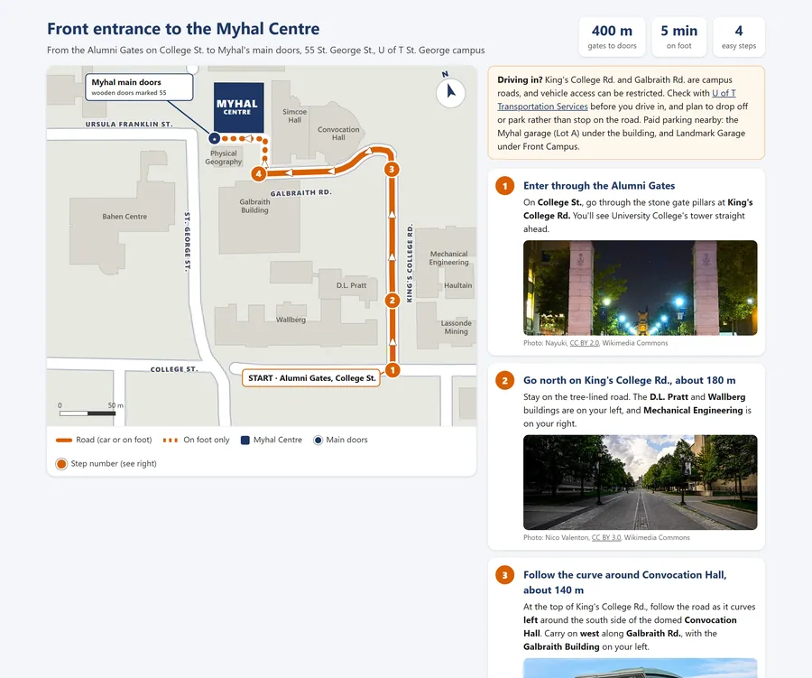

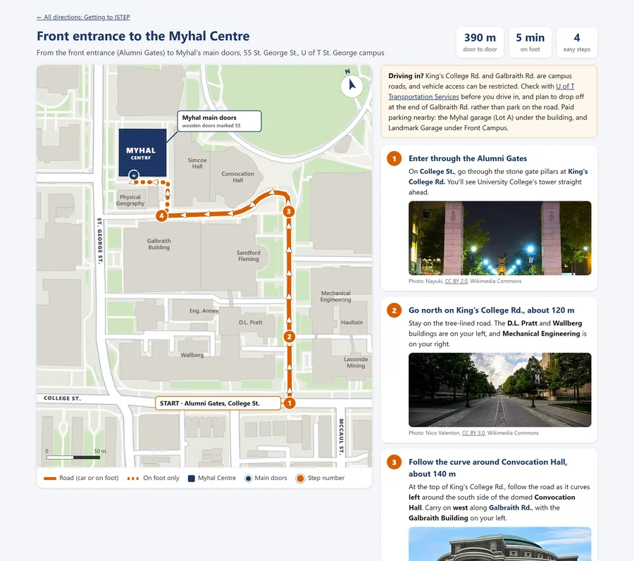
All the guides in this copy
Twenty-one of the 23 guides. The "inside Myhal" cross-section is held back because it shows the interior layout, and one route to a café is held back because it names the business throughout. The office's phone and email are removed from every guide in this copy. Photo credits are under each photo and on the credits page.
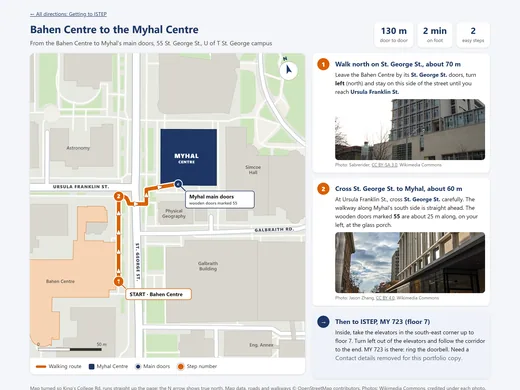
Bahen Centre to the Myhal Centre 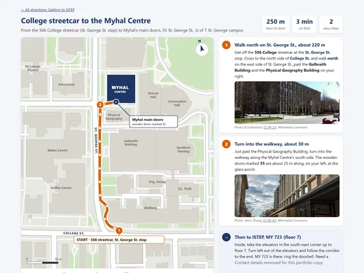
College streetcar to the Myhal Centre 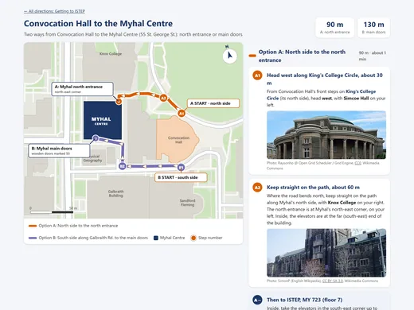
Convocation Hall to the Myhal Centre 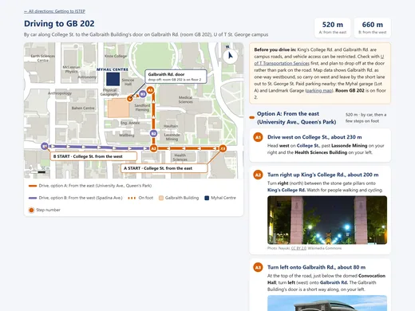
Driving to GB 202, a Galbraith Building lecture room 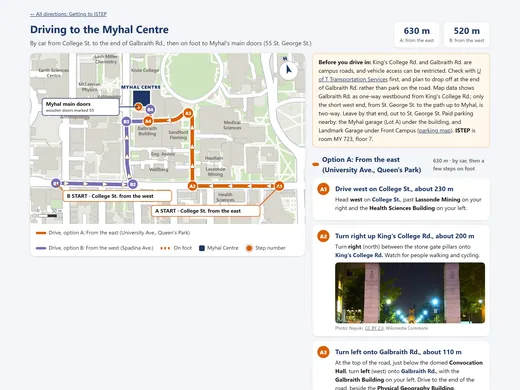
Driving to the Myhal Centre 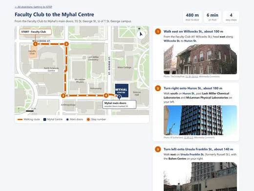
Faculty Club to the Myhal Centre 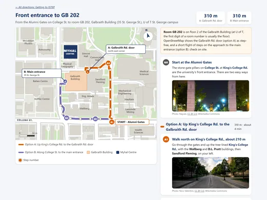
Front entrance to GB 202 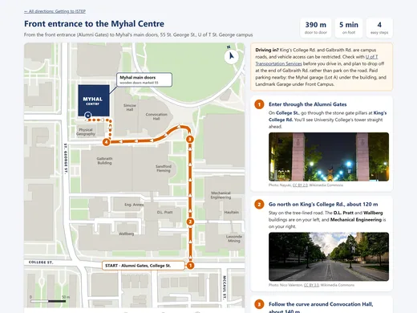
Front entrance (Alumni Gates) to the Myhal Centre 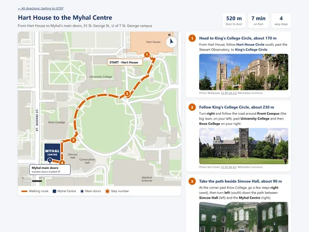
Hart House to the Myhal Centre 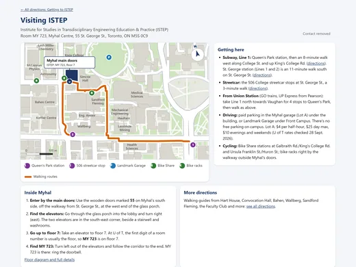
Visiting ISTEP: the one-page visitor guide 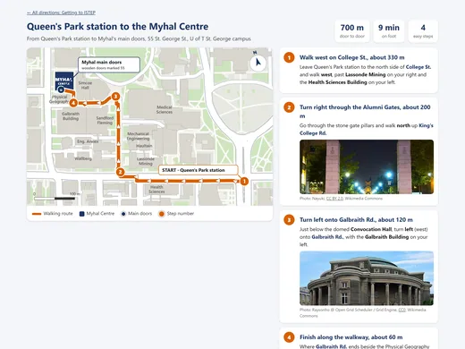
Queen's Park station to the Myhal Centre 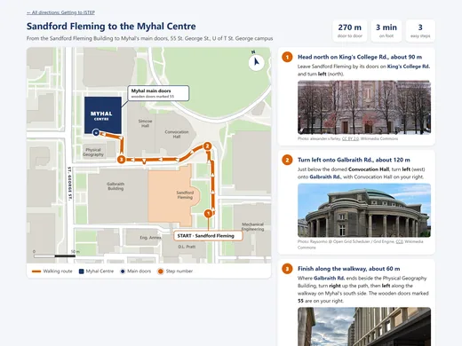
Sandford Fleming Building to the Myhal Centre 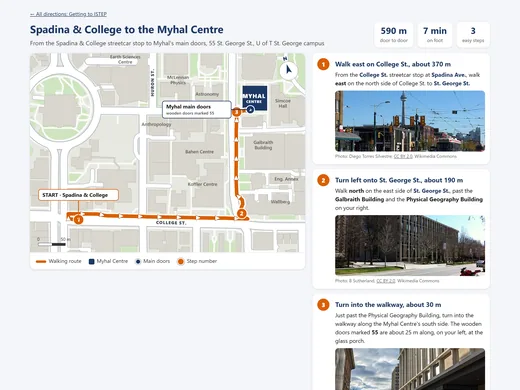
Spadina and College to the Myhal Centre 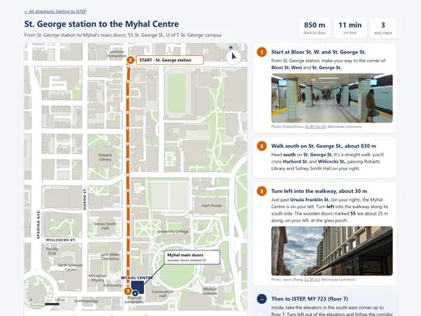
St. George station to the Myhal Centre 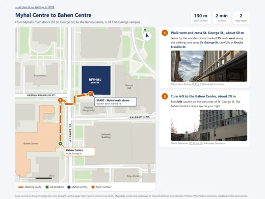
Myhal Centre to the Bahen Centre 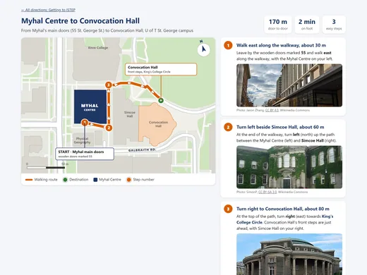
Myhal Centre to Convocation Hall 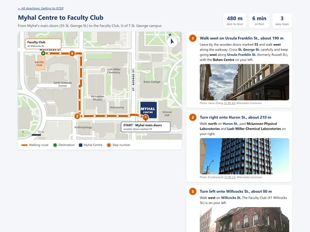
Myhal Centre to the Faculty Club 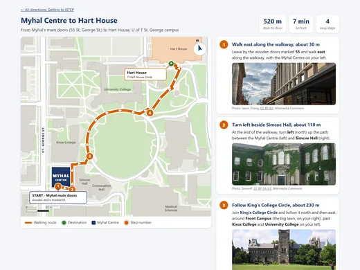
Myhal Centre to Hart House 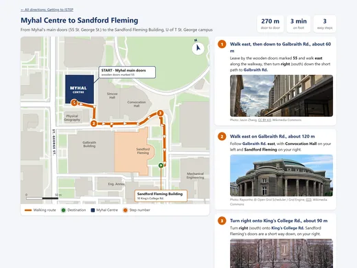
Myhal Centre to the Sandford Fleming Building 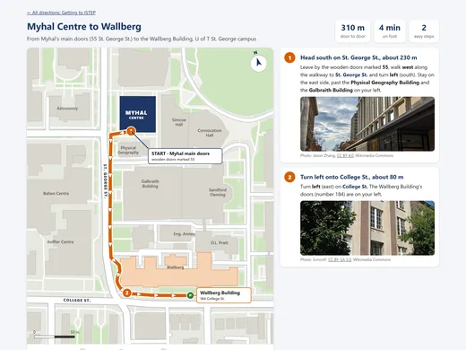
Myhal Centre to the Wallberg Building 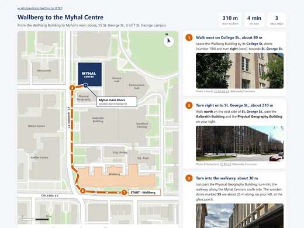
Wallberg Building to the Myhal Centre


Map data © OpenStreetMap contributors (ODbL). Base map in the tool: OpenFreeMap. Photos in the guides: Wikimedia Commons, each credited with its author and licence under the photo and on the credits page.